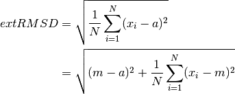

Full Reference
Typograph Object
-
class
typo_graphics.Typograph(*, glyph_images=None, samples=(3, 3), glyph_depth=2, typewriter=None, carriage_width=None) Class for processing glyphs for the creation of images.
This class primarily is designed to be used to convert an image into a set of instructions, that can be typed on a typewriter to reproduce the image.
Class methods
from_glyph_sheet()andfrom_directory()present other initialisation options.- Class attribues:
inbuilt_typewriters, list of inbuilt typewriters for which glyphs can be loaded.glyph_sheet_paths, dictionary of paths to inbuilt typewriter glyph sheets.
Exposes
image_to_text(), which can be used to convert any supplied image into glyph format.- Exposes following instance attributes:
glyphs, dictionary of typeable glyphs, keyed by glyph names, used in combinations.standalone_glyphs, dictionary of typeable glyphs, keyed by glyph names, that are only to be used alone.glyph_depth, integer detailing maximum glyphs that are combined together for each combination glyph.sample_x, integer of samples across the glyph images.sample_y, integer of samples down the glyph images.samples, tuple of ints governing how glyphs are down-sampled for matching.tree_sets, list ofTreeSetobjects containing all combination glyphs,and associated values.
-
__init__(*, glyph_images=None, samples=(3, 3), glyph_depth=2, typewriter=None, carriage_width=None) Create
Typographobject, optionally pass glyph images to use.Defaults to using glyphs for the SR100 typewriter inbuilt glyph set.
Parameters: - glyph_images ({
str:Image}) – dictionary of images, keyed with glyph names. - samples ((
int,int) orint) – number of samples across and down, used to match glyphs to input images. If onlyintgiven, uses that value for both directions. - glyph_depth (
int) – maximum number of glyphs to stack into single characters. - typewriter (
str) – name of typewriter for which output is created. If glyph images are not provided, this name is used to look for an inbuilt typewriter’s glyph set. Valid values for which are given inTypograph.inbuilt_typewriters. - carriage_width (
int) – maximum width of glyphs typeable on the typewriter carriage.
- glyph_images ({
-
classmethod
from_glyph_sheet(glyph_sheet, number_glyphs=None, glyph_dimensions=None, grid_size=None, glyph_names=None, spacing=None, **kwargs) Create
Typographobject with glyphs as extracted from glyph_sheetAllows for a single
Imageto be used to provide glyph images.Parameters: - glyph_sheet (
Imageorstringor open file) – glyph sheetImage, to be split into glyphs, a filename for such image, or an open binary file object. - number_glyphs (
intor None) – total number of glyphs present in glyph_sheet, if omitted, glyph_names must be present, and its length will be used. - glyph_dimensions ((
int,int)) – pixel dimensions of glyphs given as (width, height). - grid_size ((
int,int)) – if given, number of (rows, columns) that glyphs are arranged in. - glyph_names ([
str]) – list of unique glyph names listed left to right, top to bottom. - spacing ((
int,int)) – tuple of integer pixel spacing between adjacent glyphs, as number of pixels between glyphs horizontally and vertically. - kwargs – optional keyword arguments as for
Typograph.
Returns: An
Typographobject using glyphs images extracted from glyph_sheetReturn type: Raises: - TypeError – if number_glyphs is not given.
- TypeError – if neither grid_size or glyph_dimensions are specified.
- ValueError – if duplicates in glyph_names
- glyph_sheet (
-
static
_extract_from_glyph_sheet(glyph_sheet, number_glyphs=None, glyph_dimensions=None, grid_size=None, glyph_names=None, spacing=None) Given an image, or file for that image, split out individual glyph images from a glyph sheet.
Parameters: - glyph_sheet (
Imageorstringor open file) – glyph sheetImage, to be split into glyphs, a filename for such image, or an open binary file object. - number_glyphs (
intor None) – total number of glyphs present in glyph_sheet, if omitted, glyph_names must be present, and its length will be used. - glyph_dimensions ((
int,int)) – pixel dimensions of glyphs given as (width, height). - grid_size ((
int,int)) – if given, number of (rows, columns) that glyphs are arranged in. - glyph_names ([
str]) – list of unique glyph names listed left to right, top to bottom. - spacing ((
int,int)) – tuple of integer pixel spacing between adjacent glyphs, as number of pixels between glyphs horizontally and vertically.
Returns: tuple containing: list of glyph
Imageobjects, string name of typewriter, and total width of typewriter carriage.Raises: FileNotFoundError – if image path does not resolve.
- glyph_sheet (
-
static
_parse_glyph_sheet_file(glyph_sheet, number_glyphs=None, glyph_dimensions=None, grid_size=None, glyph_names=None, spacing=None) Handle opening of file, loading any associated meta file, and extracting meta data.
Parameters: - glyph_sheet (
Imageorstringor open file) – glyph sheetImage, to be split into glyphs, a filename for such image, or an open binary file object. - number_glyphs (
intor None) – total number of glyphs present in glyph_sheet, if omitted, glyph_names must be present, and its length will be used. - glyph_dimensions ((
int,int)) – pixel dimensions of glyphs given as (width, height). - grid_size ((
int,int)) – if given, number of (rows, columns) that glyphs are arranged in. - glyph_names ([
str]) – list of unique glyph names listed left to right, top to bottom. - spacing ((
int,int)) – tuple of integer pixel spacing between adjacent glyphs, as number of pixels between glyphs horizontally and vertically.
Returns: tuple of
Imageglyph image, followed by extracted values of number_glyphs, glyph_dimensions, grid_size, glyph_names and spacing, if no value was givenRaises: FileNotFoundError – if image path does not resolve.
- glyph_sheet (
-
classmethod
from_directory(glyph_directory, **kwargs) Create
Typographobject loading glyph images from a given directory.In addition to images, the directory can contain a name_map.json file giving alias names for glyphs located in the directory.
Parameters: Returns: An
Typographobject using glyphs images found from directory.Return type:
-
static
_get_glyphs_from_directory(glyph_directory) Fetch glyph images from glyph_directory into dictionary keyed with names.
Parameters: glyph_directory ( str) – A file path for directory containing glyph images.Returns: dictionary of images, keyed with glyph names. Return type: { str:Image}
-
_calculate_trees() Calculate tree sets for input glyphs, combined up to self.glyph_depth
Returns: list of tree sets. Return type: [ tree_set]
-
_combine_glyphs(depth) Calculate all unique combinations of depth number of glyphs.
Parameters: depth ( int) – number of glyphs to combine into composite glyphs.Returns: dictionary of combination glyphs, using glyph names as keys. Return type: dict
-
_average_glyph_values() Calculate average pixel values for all glyphs in self.tree_sets
Returns: list of average pixel values, no given order. Return type: [ float]
-
_glyph_value_extrema() Extrema of average pixel values for all glyphs.
Returns: tuple of (min, max) pixel values. Return type: ( float,float)
-
_recalculate_glyphs() Update glyph relevant attributes, for use whenever glyphs are changed.
Updates:
tree_setsaverage_valuesvalue_extrema
-
add_glyph(glyph, use_in_combinations=False) Add extra glyphs into the available pool.
New glyphs added in this manner can be excluded from use in combinations, to be used only as standalone glyph.
Adding a glyph already present in combinations, as a standalone will result in removal of glyph from combinations. The reverse of this is also true.
Parameters:
-
remove_glyph(glyph, remove_from='Both') Remove glyph from available pool.
Glyphs can be explicitly removed from combinations, standalone, or both.
Glyphs are removed by name, if passed a
Glyphinstance, will use thenameattribute."Combinations"or"C"to remove from combinations"Standalone"or"S"to remove from standalone glyphs"Both"or"B"to remove from both
Returns the glyph instance removed, or None if the glyph was not found.
Parameters: Returns: glyph removed or
None.Return type: GlyphorNone
-
_crop_to_max_size(image, max_size, resize_mode) Return copy of image, cropped to fit within max_size.
Cropping is applied evenly to both sides of image, so as to preserve center.
Image is cropped so that max_size glyphs fit inside the image, then scaled to max_size(0) * self.samples(0) by max_size(1) * self.samples(1) pixels. As such, output image may appear squashed or stretched.
Parameters: Returns: Tuple of an
Imageobject cropped to fit within max_size, and the max_size tuple, to match return signature of_scale_to_max_size().Return type:
-
_scale_to_max_size(image, max_size, resize_mode) Return copy of image, scaled to fit within max_size.
Values of
Nonein max_size are treated as infinite available space in that dimension. If (None,None), will match input image size to nearest whole glyph in each dimension.Output image ends up being scaled by the number of samples in that given dimension, as such it may appear distorted.
Parameters: Returns: Tuple of an
Imageobject scaled to fit within max_size, and a tuple of actual dimensions in glyphs. This elements of this tuple are, by definition, equal to or smaller than those in max_size.Return type:
-
_preprocess(image, target_size, clip_limit, enhance_contrast, rescale_intensity, background_glyph) Preprocess input image to better be reproduced by glyphs.
Parameters: - image (
Image) – inputImageto be processed. - target_size ((
int,int)) – output size for glyph version of image. Given as total number of glyphs to be used across and down. - clip_limit (
float) – clip limit as used byequalize_adapthist(). - enhance_contrast (
bool) – enable or disable use ofequalize_adapthist()on input image. - rescale_intensity (
float,intor None) – control, or disable the effect ofrescale_intensity(). Values higher than 1 cause values near the extremes, to be pushed into those extremes. A value lover than 1 will tend to move all values toward the average glyph value. If None is passed, the rescaling is skipped. This is preferred over passing unity.
Returns: image after preprocessing has been applied.
Return type: - image (
-
_chunk(image_data, target_width) Separate image_data into chunks, according to
sample_xandsample_y.Working from left to right, top to bottom of data representing an input image, produces lists of data corresponding to a region of the full image that are
sample_xbysample_yin size.Parameters: Returns: list of chunks, each of which are a list of integer values from source image_data.
Return type: [[
int]]
-
_equalize_glyphs(image) Adjust image histogram with the intention using each glyph equally.
Parameters: image ( Image) – image to manipulate.Returns: input image adjusted to glyph histogram. Return type: Image
-
_find_closest_glyph(target, cutoff, background_glyph) Determine closest glyph available to target data.
cutoff value can be used to specify frequency with which glyphs will be replaced by simpler glyphs that are not quite as close to target. A value of 0.0 will permit no substitutions, always using the best glyph. Higher values will allow less similar glyphs to be used, if they comprise of fewer component pieces.
Parameters: Returns: tuple of best matched
Glyphfound to target and distance between target and said glyph. Distance is given as Euclidian distance insample_x*sample_ydimensional value space.Return type:
-
_compose_calculation(result, target_width, target_height) Create calculation demonstration image, composed of glyph
fingerprint_displayimages.Useful in seeing how glyphs are matched to input image.
Parameters: Returns: a
Imagecomprised of glyphfingerprint_displayimages.Return type:
-
_compose_output(result, target_width, target_height) Create output image, composed of glyph images.
Shows the final output of converting an image to a set of glyphs. Very helpful to have visible when trying to type out result, for error checking.
Parameters: Returns: a
Imagecomprised of glyph images, representing final output of conversion from image to glyphs.Return type:
-
_instructions(result_glyphs, spacer, target_width, target_height, trailing_spacer=False) Create instruction set for the given result glyphs.
Instructions are optimised to contain the fewest groups when glyphs are combined.
For every line of the image, a number of lines are created, equal to the depth of the most stacked glyph in the line.
Parameters: - result_glyphs ([:class`Glyph`]) – list of glyphs that compost the output, listed top left, across then down.
- spacer (
Glyph) – spacing glyph, relating to a movement of 1 character over, with no glyph printed. - target_width (
int) – width of image, measured in glyphs. - target_height (
int) – height of image, measured in glyphs. - trailing_spacer (
bool) – enable inclusion of trailing spacer characters. This can be helpful for counting back from end of line.
Returns: List of instruction strings.
Return type: [
str]
-
static
_root_mean_square_distance(point, tree_set) Calculate root mean square distance of a point from points in given tree set.
Uses centroid to avoid brute force calculation.

 is number of points
is number of points is centroid of points
is centroid of points is a point of the set
is a point of the set is target point
is target point
Parameters: Returns: root mean square distance of point from points given by tree_set.
Return type:
-
static
_iter_all_strings() Generator of Excel-like lowercase row letters.
e.g. a, b, c, ... z, aa, ab useful for cases in which instructions require multiple lines per character row.
Returns: generator of excel-like string identifiers. Return type: generator
-
image_to_text(image, max_size=(60, 60), cutoff=0, resize_mode=1, clip_limit=0.02, enhance_contrast=True, rescale_intensity=1.5, instruction_spacer=None, background_glyph=None, fit_mode='Scale') Convert image into a glyph version, using the instance’s glyphs.
Parameters: - image (
Image) – inputImageto be processed and converted. - max_size ((
intorNone,intorNone)) – maximum size for glyph version of image. Given as total number of glyphs able to be used across and down. If fit_mode is “Scale”, values ofNonein max_size are treated as infinite available space in that dimension. If (None,None), will match input image size to nearest whole glyph in each dimension. - fit_mode (
string) – mode used to adjust image to fit within max_size. May be “Scale” to scale image to fit, or “Crop” to minimally crop image, maintaining center. “Crop” cannot be used withNonevalues in max_size. - resize_mode – any resize mode as able to be used by
resize(). - clip_limit (
float) – clip limit as used byequalize_adapthist(). - enhance_contrast (
bool) – enable or disable use ofequalize_adapthist()on input image. - rescale_intensity (
float,intor None) – control, or disable the effect ofrescale_intensity(). Values higher than 1 cause values near the extremes, to be pushed into those extremes. A value lover than 1 will tend to move all values toward the average glyph value. If None is passed, the rescaling is skipped. This is preferred over passing unity. Defaults to expanding the output range 1.5 times. - cutoff (
float) – cutoff level for near-enough glyph replacement. A value of 0.0 will permit no replacements. - instruction_spacer (
Glyph) – glyph to be used to represent moving the typing position one step, without adding ink. - background_glyph (
Glyph) – glyph to fill background of transparent image with.
Returns: a
TypedArtobject, containing construction, output and instructions, after preprocessing.Return type: - image (
-
_convert(image, target_size, cutoff, instruction_spacer, background_glyph) Raw conversion of image to glyphs, no preprocessing is performed.
Parameters: - image (
Image) – inputImageto be processed and converted. - target_size ((
int, :class:`int)) – output size for glyph version of image. Given as total number of glyphs to be used across and down. - cutoff (
float) – cutoff level for near-enough glyph replacement. A value of 0.0 will permit no replacements. - instruction_spacer (
Glyph) – glyph to be used to represent moving the typing position one step, without adding ink.
Returns: a
TypedArtobject, containing construction, output and instructions.Return type: - image (
Typograph return object, TypedArt
-
class
typo_graphics.typograph.TypedArt Named tuple container for output of
image_to_text()May be unpacked, or accessed using member names
calculation,output,instructionsParameters:
Typograph internal object, TreeSet
-
class
typo_graphics.typograph.TreeSet Named tuple container for information regarding sets of glyphs
May be unpacked, or accessed using member names
glyph_set,tree,centroid,mean_square_from_centroid,stack_sizeParameters: - glyph_set ([
Glyph]) – list containing a collection of glyphs - tree (
cKDTree) – acKDTreeinstantiated with the glyphs ofglyph_set - centroid (array_like) – position of centroid in
sample_x*sample_yparameter space - mean_square_from_centroid (
float) – mean square distance of glyphs from centroid - stack_size (
int) – number of fundamental glyphs used to compose each glyph inglyph_set
- glyph_set ([
Glyph Object
-
class
typo_graphics.Glyph(name, image, components=None, samples=(3, 3)) Represents the ink typed into one monospaced space.
This can comprise of multiple component glyphs, which are retained in
components. In the case that the glyph is as typed, this will contain simply a reference to self.- Exposes following instance attributes:
name, the name of the glyph.image,Imageimage of the glyph.components, the typed keys that compose this glyph.samples, tuple of ints governing how the glyph is down-sampled for matching.fingerprint, scaledImageshowing how glyph is internally processed.fingerprint_display, rescaled version offingerprint, to size of originalimage.
Explicitly supports summation with other glyph objects, which represent typing the two glyph atop one another.
-
__init__(name, image, components=None, samples=(3, 3)) Create glyph object.
Parameters: - name (
str) – name of glyph, used both internally and when creating instructions with glyphs. - image (
Image) – anImageof the glyph. Likely sourced from scanned typewritten page. - components ([
Glyph]) – glyphs that are used to create this glyph. If not specified, will default to containing this glyph. - samples ((
int,int) orint) – size specified in an integer, integer tuple for the fingerprint to be scaled to. Specified as number of pixels across, by number of pixels. Can also pass integer to be used in both dimensions.
- name (
-
__add__(other) Addition override.
Addition of glyphs encapsulates overlaying the two glyphs on a typewriter. This would be achieved by first typing glyph1, moving the carriage back, and typing glyph2 in the same space. Image combination is achieved with
darker()If the
samplesof the two glyphs are not equal, aValueErroris raised.The returned
GlyphAddition of two glyphs returns a new glyph object, combining images withdarker(), and combining names with a space.Parameters: other (
Glyph) – glyph to add.Returns: composite glyph of this, and the other glyph.
Return type: Raises: - ValueError – if
samplesattribute of the two glyphs do not match. - TypeError – if addition is attempted with an object not of type
Glyph. - ValueError – if
Glyph.image.modeattribute of the two glyphs do not match.
- ValueError – if